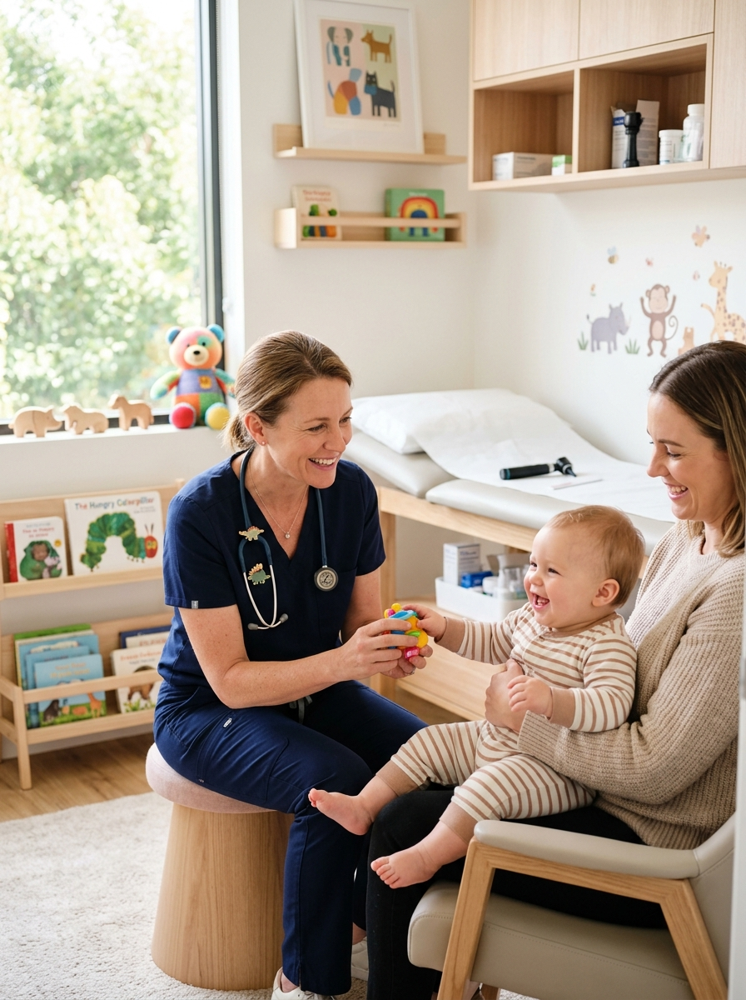
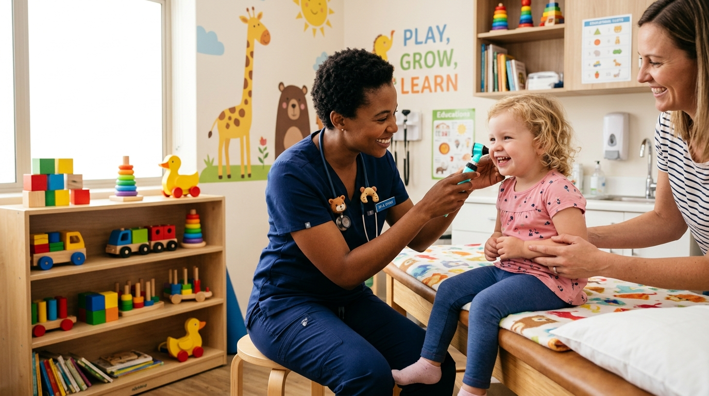
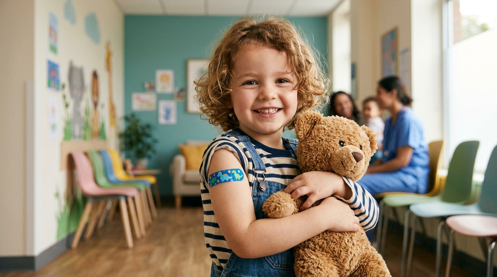
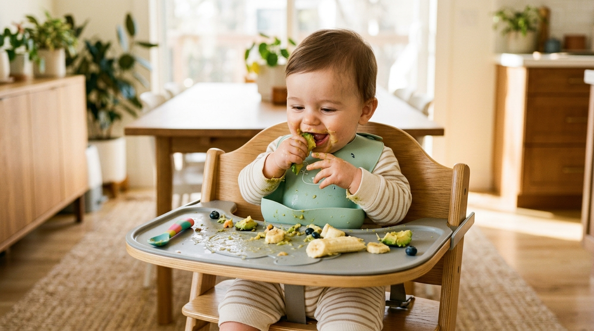
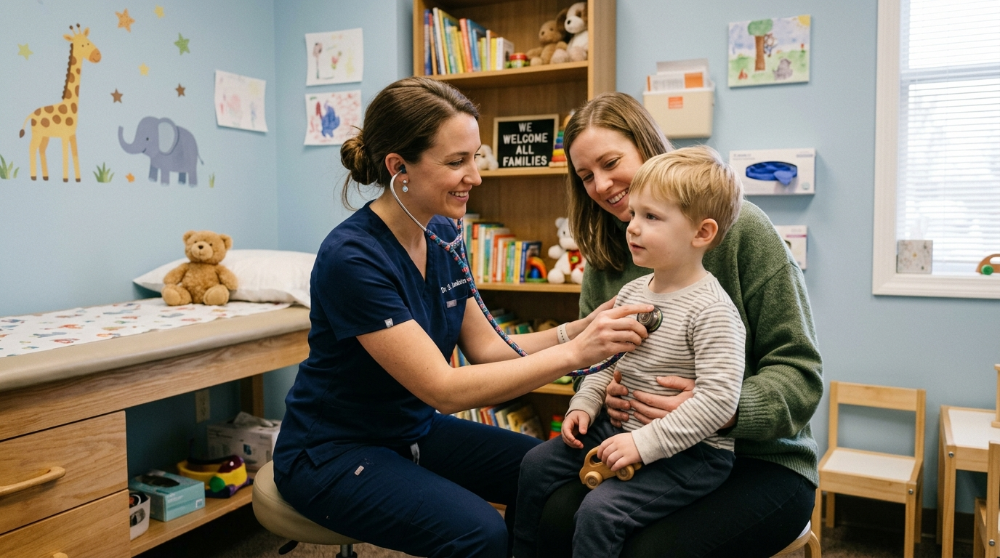

Consultas sem pressa, suporte direto para emergências cotidianas e um ambiente acolhedor planejado especialmente para a infância.

Acompanhamento preventivo integral para garantir o crescimento físico, neurológico e emocional saudável.

Monitoramento detalhado de marcos motores, ganho de peso, estatura e orientações individualizadas para cada salto de desenvolvimento.
Agendar PuericulturaAtendimento acolhedor na primeira semana de vida: suporte na amamentação, ganho de peso, triagem de icterícia e orientações para os pais de primeira viagem.
Agendar para Recém-Nascido
Aplicação de vacinas com dispositivos que diminuem a dor e o medo (dispositivos de vibração e alívio térmico), tornando a experiência serena.
Consultar Calendário VacinalDiagnóstico e manejo de alergias alimentares (APLV), dermatites, rinite, asma e suporte a quadros de infecções respiratórias frequentes.
Agendar Investigação
Orientação completa para os 6 meses (método BLW e participativo), prevenindo seletividade alimentar e garantindo uma relação saudável com a comida.
Consultoria Alimentar
Horários reservados na agenda diária para avaliar febre súbita, tosse, vômitos ou quedas sem a necessidade de esperar horas em um pronto-socorro.
Solicitar Encaixe no DiaEliminamos o medo de médico com uma estrutura acolhedora, divertida e com alto rigor de higiene.
Espaço de espera interativo com brinquedos educativos esterilizados e livros para transformar a visita em um momento divertido.
Sala privativa e confortável para amamentar, trocar fraldas e aquecer mamadeiras com tranquilidade antes ou após o atendimento.
Suporte pós-consulta direto com a equipe para dúvidas sobre receitas, febre e intercorrências do tratamento.
Formada pela Faculdade de Medicina da USP com residência médica no Instituto da Criança do Hospital das Clínicas (ICr-HCFMUSP), a Dra. Carolina atua há mais de 12 anos combinando rigor científico de ponta com um olhar empático sobre a rotina real das famílias.
Ambiente esterilizado, brinquedoteca higienizada, trocador completo e estacionamento privativo com manobrista.